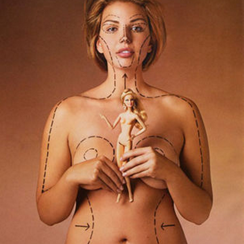

Eating Disorder Myths
Put your hands in the air and step away from the simplistic assumptions.

Put your hands in the air and step away from the simplistic assumptions.
Eating disorders are serious, life-threatening illnesses - not choices. People with eating disorders suffer from disturbances in their relationship to food and their patterns of eating. They may also struggle with self-image and their perceptions of their own body (body dysmorphia).
Eating disorders are on the rise in the United States and worldwide. Among U.S. females in their teens and 20s, the prevalence of clinical and subclinical anorexia may be as high as 15%. 10% of reported eating disorder cases are among men, although researchers believe the true number is much higher due to severe under-reporting.
Anyone can get an eating disorder, regardless of age, race, sex, socioeconomic status, sexual orientation, gender identity, or any other factor. See our information on EDs and Body Image in Diverse Communities for more.
Unfortunately, eating disorders are often life-threatening, and can lead to a host of serious health complications in the heart, bones, stomach, asophagus, teeth, and endocrine systems. Anorexia nervosa also has the highest mortality rate of any mental illness.
The causes of eating disorders are complex and typically include socio economic, environmental, cultural, and biologic factors. Eating disorders are often symptomatic of deeper psychological issues such as low self-esteem and the desire to feel in control; however, a significant genetic component is believed to be involved. See our information on Eating Disorders Myths and The Relationship Between Body Image and Eating Disorders for more.
OSFED is a new classification in the DSM-5, replacing EDNOS (Eating Disorders Not Otherwise Specified) as a "catch-all" for other disordered behaviors that don't fall specifically into any of the other diagnostic categories.
All information from the National Eating Disorders Association.
If you are concerned that someone you know might be struggling with an eating disorder, the first step is to talk to them about it. The goal of an introductory conversation like this is simply to open up a dialogue and let them know that you are there for support.
Intuitive Eating is a nutrition philosophy, not a diet plan. It rests on the principle that if you really get in touch with your own body and mind, you will eat healthy food naturally and without any particular effort. The basic summary is, “Eat when you’re hungry, stop when you’re full.” It encourages getting in touch with your body so that you can tell when you are truly hungry and truly full versus eating or restricting as a way to avoid dealing with another emotion. Intuitive eating has no “diet rules,” “forbidden foods,” or calorie counting, and the ultimate goal is not to achieve any particular body size or shape, but rather to be healthy.
The principles (from IntuitiveEating.org):
Intuitive eating requires being very in touch with your body's natural hunger/fullness signals, which is not possible for everyone at all times. For example, some people who are in recovery from eating disorders have found that their bodies' natural signals are no longer functioning as they should due to the disorder, and therefore need to use other strategies to stay healthy. Nevertheless, intuitive eating can be a very helpful mindset for people who might be struggling to find a peaceful relationship with their body and with food.
For more information, go to IntuitiveEating.org.
Body image is the perception that a person has of their physical self, but more importantly the thoughts and feelings the person experiences as a result of that perception. It is important to understand that these feelings can be positive, negative or a combination of both and are influenced by individual and environmental factors.
People with positive body image will generally have a higher level of physical and psychological health, and better personal development. A positive body image will affect levels of self-esteemm and self-acceptance, and foster healthier life outlook and behaviors.
The way the media represents "ideal" bodies, particularly women's bodies, is unrealistic and harmful.

Major source: National Eating Disorders Collaboration
Most of us see and hear problematic comments about others' bodies constantly in our everyday lives. It might make you uncomfortable, but how do you react when you see a comment on your friend's profile picture about how "hot and skinny" her new dress makes her look? What do you say when you hear one friend tease another about being too skinny and needing to "bulk up"?
Negative response:
Positive response:
Negative comment:
Positive comment:
Eating disorders are a complex medical/psychiatric illness. Eating disorders are classified as a mental illness in the American Psychiatric Association’s Diagnostic and Statistical Manual of Mental Health Disorders (DSM-IV), are considered to often have a biologic basis, and co-occur with other mental illness such as major depression, anxiety, or obsessivecompulsive disorder.
People do not choose to have eating disorders. They develop over time and require appropriate treatment to address the complex medical/psychiatric symptoms and underlying issues.
All eating disorders can have damaging physical and psychological consequences. Although excess weight loss is a feature of anorexia nervosa, effects of other eating disorders can also be serious or life threatening, such as the electrolyte imbalance associated with purging.
While the rate of death from bulimia nervosa is much lower than that seen with anorexia nervosa, a person with bulimia can be at high risk for death and sudden death because of purging and its impact on the heart and electrolyte imbalances. Laxative use and excessive exercise can increase risk of death in individuals who are actively bulimic.
Although a person may not fulfill the diagnostic criteria for an eating disorder, the consequences associated with disordered eating (e.g., frequent vomiting, excessive exercise, anxiety) can have longterm consequences and requires intervention. Early intervention may also prevent progression to a fullblown clinical eating disorder.
While fad dieting or body image concerns have become “normal” features of adolescent life in Western cultures, dieting or frequent and/or extreme dieting can be a risk factor for developing an eating disorder. It is especially a risk factor for young people with family histories of eating disorders and depression, anxiety, or obsessive-compulsive disorder. A focus on health, wellbeing, and healthy body image and acceptance is preferable. Any dieting should be monitored.
Anorexia has nothing to do with dieting. It is a lifethreatening medical/psychiatric disorder.
You can’t. Anorexia may be easier to detect visually, although individuals may wear loose clothing to conceal their body. Bulimia is harder to “see” because individuals often have normal weight or may even be overweight. Some people may have obvious signs, such as sudden weight loss or gain; others may not. People with an eating disorder can become very effective at hiding the signs and symptoms. Thus, eating disorders can be undetected for months, years, or a lifetime.
Eating disorders are a mental illness and have little to do with food, eating, appearance, or beauty. This is indicated by the continuation of the illness long after a person has reached his or her initial ‘target’ weight. Eating disorders are usually related to emotional issues such as control and low self-esteem and often exist as part of a “dual” diagnosis of major depression, anxiety, or obsessive-compulsive disorder.
While sociocultural factors (such as the ‘thin ideal’) can contribute or trigger development of eating disorders, research has shown that the causes are multifactorial and include biologic, social, and environmental contributors. Not everyone who is exposed to media images of thin “ideal” body images develops an eating disorder. Eating disorders such as anorexia nervosa have been documented in the medical literature since the 1800s, when social concepts of an ideal body shape for women and men differed significantly from today—long before mass media promoted thin body images for women or lean muscular body images for men.
Recovery can take months or years, but many people eventually recover after treatment. Recovery rates vary widely among individuals and the different eating disorders. Early intervention with appropriate care can improve the outcome regardless of the eating disorder. Although anorexia nervosa is associated with the highest death rate of all psychiatric disorders, research suggests that about half of people with anorexia nervosa recover, about 20% continue to experience issues with food, and about 20% die in the longer term due to medical or psychological complications.
The causes of eating disorders are complex and typically include socio economic, environmental, cultural, and biologic factors. People who experience eating disorders often go to great lengths to conceal it due to feelings of shame or a desire to persist in behavior perceived to afford the sufferer control in life. Eating disorders are often symptomatic of deeper psychological issues such as low self-esteem and the desire to feel in control. The behaviors associated with eating disorders may sometimes be interpreted as ‘attention seeking”; however, they indicate that the affected person has very serious struggles and needs help.
Eating disorders have been diagnosed in children as young as seven or eight years of age. Often the precursor behaviors are not recognized until middle to late teens. The average age at onset for anorexia nervosa is 17 years; the disorder rarely begins before puberty. Bulimia nervosa is usually diagnosed in mid-to-late teens or early 20s, although some people do not seek treatment until even later in life (30s or 40s).
Individuals often suffer from more than one eating disorder at a time. Bulimarexia is a term that was coined to describe individuals who go back and forth between bulimia and anorexia. Bulimia and anorexia can occur independently of each other, although about half of all anorexics become bulimic.
Weight recovery is essential to enabling a person with anorexia to participate meaningfully in further treatment, such as psychological therapy. Recovering to normal weight does not in and of itself signify a cure, because eating disorders are complex medical/psychiatric illnesses.
All information from theNational Eating Disorders Association Educator Toolkit.
Unrealistic standards of “ideal bodies” might “kick off” an ED in some people, but in others the problems may have nothing to do with body dissatisfaction. Even in people who did start out struggling with body image, there is always much more to an eating disorder than the desire to fit into a certain image or ideal. Any individual might relate to food, size, weight, shape, routine, or rules in ways that are related to but not identical to or caused by media messages about "ideal" bodies.
We cannot emphasize this enough. EDs are not “about” body image and you cannot “cure” someone’s ED by convincing them that they are beautiful or that their body is acceptable. We wish it were this simple, but the road to recovery is longer and more complex than just getting a self-esteem boost.